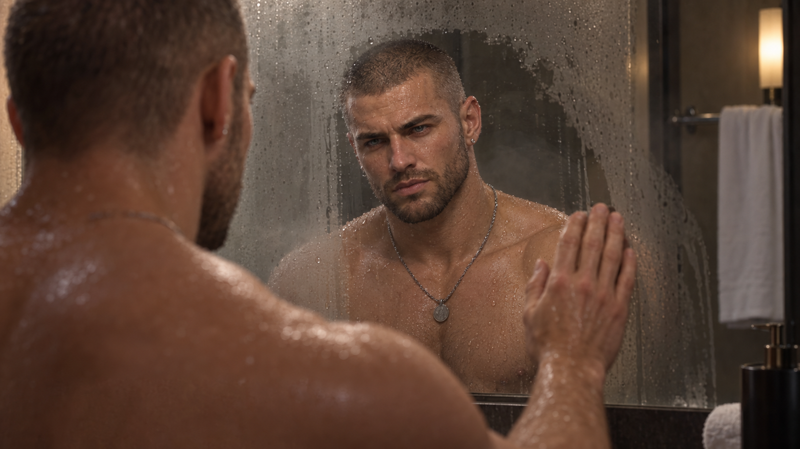
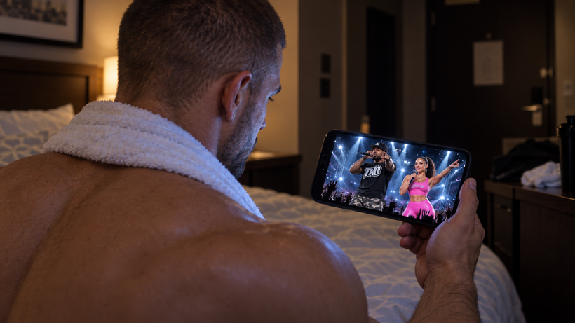
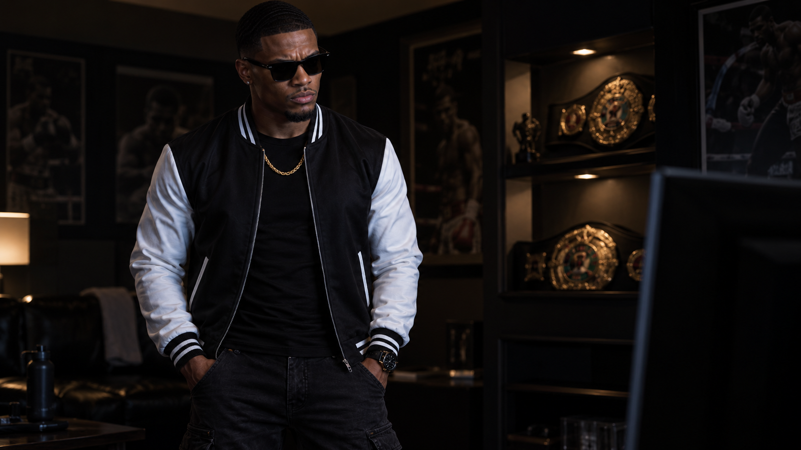
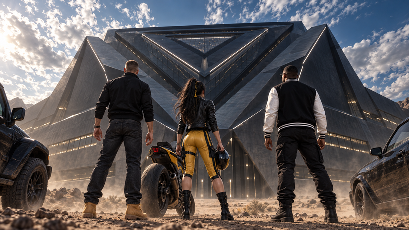
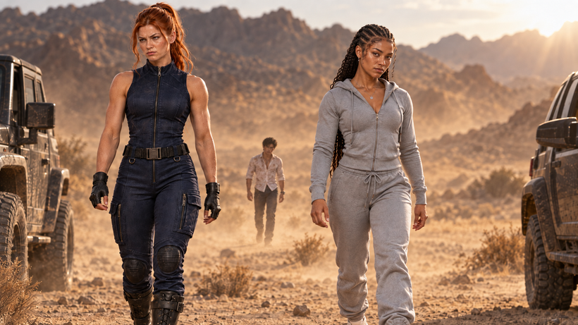
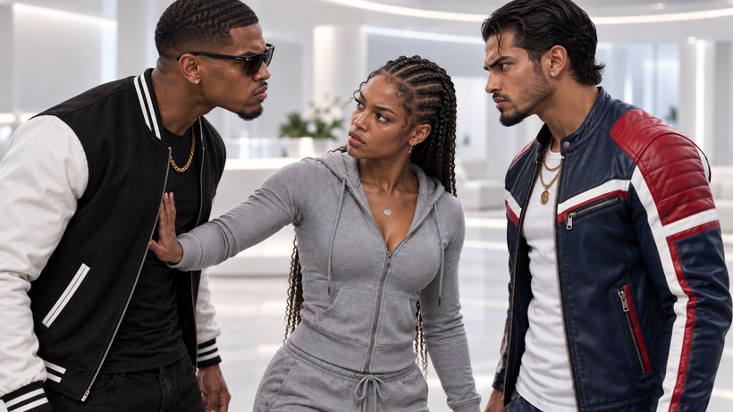
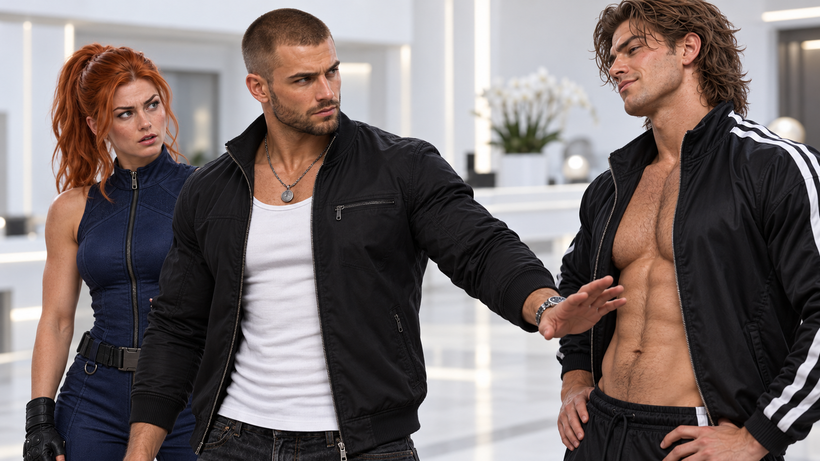
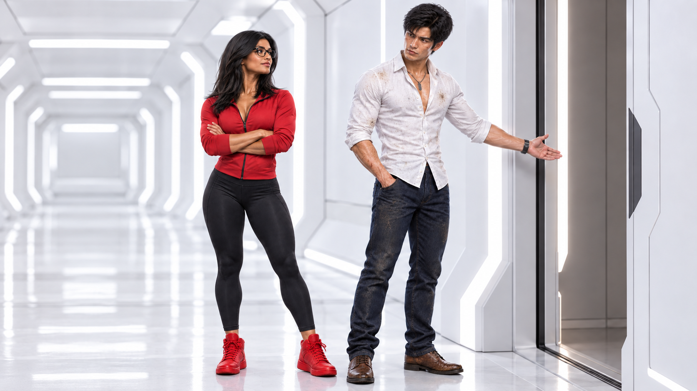
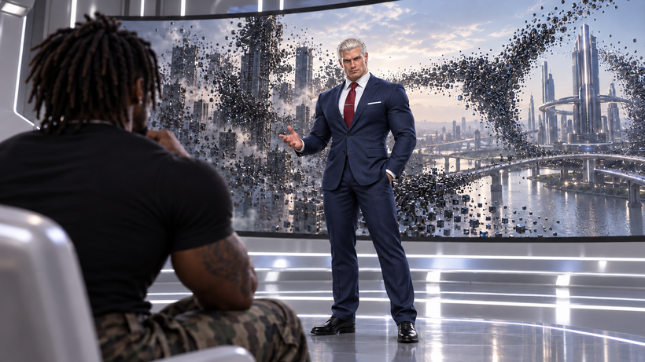
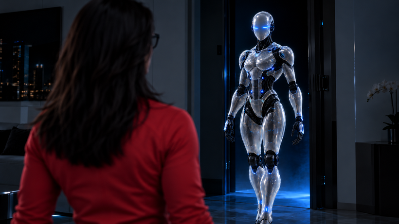

The episode begins with the image of a short hallway leading to a single door, visible from the handle to the floor. The door opens to a man whose face remains unseen as he closes the door and tosses his keys on a nearby end table. Wearing dark jeans and tan boots, he enters a side room as the view slowly moves back, fixed on the door.
The sound of bath water switches to a shower before he exits the restroom and crosses the hallway into another room.
The scene cuts to the man, from the shoulders up, as the rapid water drops impact his face in a slow-motion shot. Moments after exiting, he wipes the mirror to get a clear look at himself. The scene briefly pauses, identifying the man as "GRANT."

He falls backwards onto his hotel bed as his room becomes more visible. With his necklace and small attached locket lying on his chest, he activates his phone. The lock screen is a young brunette girl, whom he takes a long look at with a peaceful smile.
He swipes to the home screen, where several icons cover a peaceful picture of Grant, the young girl and a brunette woman whose face is covered by an app.
He clicks on a blue icon, pulling up the popular media app, ViewTube.
After the app loads, he immediately types in "MMA knockouts." From there, he scrolls through a few fight thumbnails. He suddenly comes across his own face within one of the fights.
The view zooms in on his eyes, as he appears in thought, before quickly scrolling away. Finally, he lands on a clip he wants. Watching a collage of multiple knockouts, he rubs his freshly cut hair, appearing exhausted.
The video reaches a short countdown, signaling incoming ads. Grant places his phone on the counter and checks the fridge. After a short ad that is mostly ignored, a second begins with a heavy bass instrumental.
Grant, nodding his head, prepares to make a sandwich when the sound of an arena full of people screaming overtakes the music. He leans over to take a look while setting up some ingredients and notices a platform with several flashing lights.
From there, a rapper dressed in camouflage pants, a fitted cap and a black shirt with a logo with the letters "TKO," appears on the stage.
The scene briefly pauses as his name, Tikayoh, appears. Images of a biracial woman with her hair pulled into a big curly ponytail flash across the screen. Dressed in pink, the name "Zadora" comes into focus across her pink top.
The rapper, center stage, says, "So. You think you got what it takes? Huh?" The crowd cheers after every statement. Zadora photo shoot images appear between his statements while the slick, silver-laced presentation catches Grant's attention.
Tikayoh says, "Ten chosen fighters from around the world. One million dollars on the line. Inside the most advanced arena ever created."
Then, Zadora, with a slightly high-pitched voice, appears again and asks, "So, what are you fighting for?"
Grant is now holding his phone, appearing intrigued. Finally, Tikayoh appears as the crowd goes wild. "Welcome... to the Battleground! Now, who's ready to fight?"

As the music plays at the end of the ad, Grant's eyes narrow as he locks in on some details of how to enter. He screenshots his phone and sits up. On the edge of his bed, Grant looks around for a moment and quickly gets up.
Elsewhere, an alarm suddenly goes off on a small table. A hand appears and slaps it, stopping the loud buzzing sound.
From there, a Black man with wavy but messy hair wakes up. Moaning from aggravation, he pulls himself to an upright position. Eyes half open, he slowly closes them while still sitting up. The scene pauses, revealing his name, Darius.
The scene shifts to Darius entering a separate apartment. He enters, still wearing shades, looking confused and slightly annoyed. Noticing a woman in a bikini passed out on the floor, he quietly steps over her, entering the living room.
After noticing a young man lying face down sloppily across the couch, Darius, in a loud tone, says, "BOBBY! GET UP!" The man, clearly named Bobby, gets up and frantically begins cleaning.
"Darius, oh my God. Bro... I was just about to call you?" says Bobby with an apologetic vulnerability.
Darius looks frustrated and slowly turns to face Bobby. "You was about to call me? BRO! I just woke your ass up. And, who the hell is that? You can't just be havin' drunk women in here passed out like that, man."
Bobby looks at the passed out woman, still on the floor, and looks back at Darius with what can only be described as an accidental smirk.
Darius says, "Bro, clean this shit up. ASAP. I'm not gonna lose my shit over this today, ok? I'm gonna grab a Capri Sun. I'm gonna go in the other room to breathe, and by the time I come out..."
Bobby nods, waving his hands, saying, "Say no more, say no more. Bruh, I got this. We partied, got carried away, that's on me. We got a long day of streaming to do so, yea, I already know."
Darius enters another room and sits, taking a deep breath. He closes his eyes, clearly overwhelmed. After reopening his eyes, he takes a moment to look around the room. The walls have several flyers from past fights with Darius's image on them. Glancing over to another wall, there are two championship titles placed on display. After a moment, he looks down, seemingly affected by his own accolades. Then, there is a knock at his door.
Bobby enters, moving swiftly. "Bro, look. I'ma leave you alone, but I gotta show you something." He reaches for and grabs the remote. ViewTube appears on screen and Bobby types Fight of Your Life in the search bar.
The view slowly zooms in on Darius's face as the commercial for Fight of Your Life can be heard in the background. Bobby watches him closely as Darius stands and moves closer to the screen, clearly interested.

"I'm tellin' you bro. Soon as I seen this, I was like naw, that's you. And it's a milly?"
The music, the sounds and Zadora's image immediately grab him.
Darius whispers, "Fight of Your Life," as he takes in the ad. Turning back to Bobby with a serious tone, he says, "Aye, I need you to film something for me."
Meanwhile, the scene moves outside a local gym, focusing on a red-haired woman inside. With the gym all to herself, she kicks a punching bag with expert precision. The scene pauses, revealing her name, Chasity.
The door opens behind her, forcing a small bell to chime. Turning to get a quick view, a tall, muscular man casually walks in. Immediately locking eyes with him, she looks away, although he remains fixated on her.
She comfortably moves to a leg machine, lying back. After getting comfortable and preparing herself for the reps, the man walks over to her.
Standing directly over her, he says, "Hey, you're too pretty to be in here all by yourself this late."
Chasity looks back up at him and gives him a sarcastic smile. She quietly stands and walks off to a nearby machine. The man strangely follows her. He says, "Oh, you one of them types? Feminist?"
Chasity looks back at him, eyes narrowed, before she looks away and smiles unnoticeably. She then approaches him with a confident expression. "Feminist? Too pretty? Well, I'm pretty sure I can take care of myself, if that's what you meant. And a second ago, when I stepped away after what you said, that was me rejecting whatever it is you call this."
The man clenches his fist and becomes red-faced. Chasity does not change her body language or demeanor as the two exchange glares. The man looks around, attempting to brush it off, and simply walks off to a different room.
Chasity turns her back to him, closes her eyes and takes a deep breath.
Suddenly, an ad catches her attention. Looking away from the screen at first, she hears the words, "One million dollars on the line."
Appearing confused and interested, she turns and steps closer to the wall-mounted TV. Tikayoh and Zadora's ad draws Chasity in as she pulls out her phone. She types in the words, "Fight of Your Life."
Then, the scene switches to a self-recorded video. A young Black girl with cornrows and swirling edges sits facing the camera. Looking directly into the camera, as if she is auditioning, she says, "Hi. I'm..."
The screen briefly pauses, revealing her name, Simone.
She continues, saying, "Umm, so my dad was a boxer and a kickboxer. Known but, yea, not popular in that sense. So, naturally, being his only child and... you know... not a boy, he trained me. Harder maybe, to be this unstoppable female fighter."
Simone, obviously recording an audition tape, moves to the physical section. From there, she shows off her kickboxing skills with a hip-hop backdrop.
She ends the tape saying, "So, the application asked me... What are you fighting for? I guess... I don't know. I mean, Mo' money creates mo' problems, as they say, right? Attention creates its own problems. I'm not auditioning to show up and lose but... if he was alive, I'm sure my dad would be in my corner. So, yea. I guess we would all fight for the money but... " The scene cuts to black.
The scene fades back into a fast-paced musical score. The tires of a motorcycle appear as the view travels up to its driver, wearing a black protective helmet.
The driver speeds down a long stretch of desert until reaching the top of a hilly area. From there, the driver pulls off the helmet, revealing a Korean woman with long black hair.
The scene pauses, revealing her name to be Hana.
Looking down toward lower ground, a massive and suspicious triangle-shaped facility appears in the middle of the desert. A low, humming dark score presents the structure ominously. Hana keeps a cautious expression before putting her helmet back on and driving down the hill, toward the building.
Closer to the building, a red sports car speeds down a path toward the structure. Whipping carefully through the various turns, the car reaches a long stretch with the dark facility in its sights. In the rearview mirror, Grant's eyes are shown as he looks back.
Not far behind, an all-black sports car can be seen speeding along, with Hana on her motorcycle only a few miles behind. The black car finally pulls up, as dust fills the scene.
After the door opens, Darius steps out with a sports jacket and shades on. He steps forward, slowly, while looking up toward the intimidating structure. He approaches Grant, who is already staring up. The camera spins, revealing the massive triangular building standing several stories high.
"Hey. Name's Grant."
While continuing to look up, he sticks his hand out as a greeting, still processing the building.
"Yea, whatup, Darius." They shake hands while still both in amazement at the sizable building before them.
After snapping back to reality, Grant actually locks eyes with Darius and says, "Sorry, place is a little distracting. I'm assuming you got an invite?"
Darius says, "Yea. Sent the tape, got the email and the addy type shit. Here I am. But... I don't know where I am."
They both turn toward the sound of incoming vehicles as a motorcycle, followed by two more cars, catches their attention.
While awaiting the new arrivals, Darius says, "So, what you know about this place? I saw a million dollars and said, say less."
Grant briefly smirks and says, "Yea, I think that million is worth fighting for. Since that seems to be the tagline. I bet all of us feel the same way."
The cycle pulls up first. After stepping off of her bike, Hana removes her helmet. Darius whispers, "Please tell me it's guys versus guys and girls versus girls cuz I don't wanna fight her, man." Grant nudges him jokingly as they approach.
"I am Hana. You both here for Fight of Your Life, yes?"
Grant says, "Yea, you're in the right place. I'm Grant, this is..."
But Darius steps in between them, extends his hand and says, "Aye, nice to meet you Hana. I'm Darius Philips, future Fight of Your Life Champion. Two-time world heavyweight boxing champion."
Hana glances at Grant, unaffected, before looking back to Darius and saying, "Former... champion. Streamer."
Darius looks surprised and looks back to Grant, who himself is fighting a laugh.
She continues, saying, "I am aware of your antics. But please, restrain your charm." Darius smiles, puts his hands up and steps back, clearly and effectively countered.

Everyone then turns, as the two other car doors open. Out step Chasity and Simone from their respective rides. They look at each other and nod as they walk toward the three fighters together.
Looking forward as they walk Chasity says, "So, you gotta name?"
Simone, eyes forward, says, "Yea," before walking slightly faster.
They both pass the view as the camera remains pointed off in the distance. Zooming in, a Japanese man in a dress shirt, jeans and boots walks alone. His clothes appear dirty, and he is sweating.
A single line of blood runs down his cheek as if he was recently in a struggle. He walks casually toward the building.

The two women finally approach the others. Darius's expression changes as Simone nears and he remains uncharacteristically quiet. She looks toward him but quickly looks away, noticing him staring.
"I'm Chasity, here for Fight of Your Life. I... don't like introductions so, I'm glad that's over."
Grant smiles and says, "Well, I thought you did ok." She looks at him, eyes narrowed slightly as if she is sizing him up.
He reaches his hand out. "Grant. Pleasure to meet you, Chasity." They share a brief moment, with Chasity hesitating to speak.
Darius comically says, "Yea, hi Chasity. But you. What's your name?"
Simone's eyes move to Darius before she looks away quickly.
"Simone. I... saw the ad. Put in the application and looks like they chose me, like the rest of you all, I'm assuming. I... don't see ten people so, as awkward as this all is, I guess there's more?"
"Well, I'm Darius. You might have seen me..."
But he pauses. Hana rolls her eyes, recognizing that Darius is making his next move. Darius glances over at her, realizes his approach and looks back to Simone.
"Nevermind. Nice to meet you. I hope... you and I don't have to fight, because..."
Simone's eyebrow arches. She says, "Because what? Scared to get your ass kicked by a girl? Live on ViewTube? Don't worry, Mr. Philips, I'll go easy on you." Simone casually walks past him.
Darius looks over to Grant, whose expression is comically sympathetic. Darius says, "Yea, make all the faces you want. Mr. Philips? You hear that? She knows me."
He casually walks off with a smile. Hana, standing with Grant and Chasity, says, "Let's just hope he gets eliminated first." Chasity cracks a smile, fighting off a laugh.
Eventually, the Japanese man approaches. The scene pauses, finally revealing his name, REN.
Darius approaches him and says, "Yo, tell me you are not here for the competition? Please?" REN appears confused but says, "Yes. I am REN. I am here for Fight of Your Life. Am I in wrong place?"
Darius says, "Really? You walked through the damn desert? For a fight? And you Japanese? Man, I'm goin' home, you won already." A few of the contestants laugh at Darius's banter.
He continues, saying, "Naw, I'm just playin' man. You crazy as hell, walkin' through the desert like that. For a million dollars, though? I feel you. But damn man, what the hell happened to you?"
REN brushes some dust off of his clothing. "Oh, this? Nothing. Car died. Almost got robbed. Pretty boring stuff, really." Darius, looking back to the others, says, "What? Now how the hell is that boring?"
REN looks up slightly at Hana before looking away. She does the same, suspiciously, as they turn their focus to the building.
Grant looks toward the lot to his right. "Hey, looks like we aren't the only ones here." The group looks toward several other cars before all turning to face the building.
The view zooms out to a wide shot of all six of them heading toward the main entrance.
To Darius, Grant asks, "So, do we just walk up and... you know. What are we doing exactly?" Chasity says, "Yea, for what this is, we're walking into a pretty vague situation."
Simone says, "I saw the poster girl and the rapper. But they didn't show a lot more than that, did they? They hooked us in with the money." They approach collectively as the black-tinted windows give the building a mysterious vibe.
A sliding door mysteriously opens, providing light as they enter the structure. Chasity looks toward Grant moments before they enter. Both appear nervous, but her expression hints at an underlying interest.
REN and Hana finally lock eyes officially. He nods, followed by a nod from her, before she enters the bright space inside.
All six of them walk through a small room with a completely white interior, toward a single door. As they approach, that door opens.
After entering, they pass by four more combatants. A Hispanic man, an Indian woman, a tall, muscular Jamaican man with dreadlocks and a smug-looking, sizable Caucasian man with curly hair all appear to have arrived earlier.
Darius looks past each of them, but then locks eyes with the Hispanic man. After a few seconds, their looks become a brief staredown. The scene pauses, revealing his name to be Enrique.
"Aye, you gotta problem? Bro? Kinda lookin' at me for too long, ese," says Enrique.
Darius, having looked away, looks back and says, "What? You talkin' to me?"
Enrique fires back, "You already know I'm talking to you. You lookin' like you gotta problem or you want one."
Darius's expression shifts and he steps toward him.

Simone steps between them. "Another day, Philips. Eyes on the prize." He gives her a strange look, completely removed from his initial issue with Enrique.
She looks away as he stands there silently. "What? What are you staring at?"
Darius laughs. "I'm sorry. I'm just like, why'd you do that? Why do you care? If we're really against each other, you know, every man or woman for ourselves... why would I need my eyes on the prize? I mean, you right... but why do you care? It's essentially your prize too... so."
Simone says, "Wow. I didn't expect you to be so literal. Think of it like this. I know who you are, just like the rest of the world. And... there's more to it than that. Maybe... maybe what I said goes beyond this fight. Just in general, streamer."
Darius looks away, realizing she is referring to his focus here as well as his live daily streaming career, which has taken more of his time than boxing.
Chasity notices that the smug-looking new face maintains an uncomfortable stare toward her.
The scene pauses, revealing his name, Declan.
She looks away a few times before becoming visibly bothered. Grant catches her shift in demeanor and attempts to figure out her issue. He turns as Declan slowly approaches her.
With an arrogant tone and a British accent, Declan says, "Excuse me, but I noticed your eyes and... your inability to keep them off of me. I am Declan."
With his already unzipped jumpsuit jacket revealing his chest, he stands with a confident smile, placing his hands on his hips.
A moment before she angrily responds, Grant steps in closer to her and looks at Declan.

"You know, she gave me the same look and... " Grant simply shakes his head as a warning to Declan, as if his attempt to approach her already didn't work. Declan shifts his demeanor, clearly agitated at them both.
Reaching out for a greeting, Grant states his name. Declan shakes his hand aggressively while still looking toward Chasity.
Declan, unsure of the nature of the encounter, says, "Perhaps we will... all be fortunate enough to face each other, out there."
Grant confidently says, "Can't wait."
He and Declan share an extended look before Darius steps in. Placing his hand on Grant's chest, he attempts to back him away from an altercation.
Chasity appears deep in thought during the ordeal, standing at a loss for words. After Darius pulls him away, she keeps her eyes on Grant, seemingly wanting to speak.
The tall Black man with dreadlocks smirks at Declan as he walks by him. Looking toward the others, the scene briefly pauses to reveal his name, Makeo.
With a commanding voice, he says, "So you the tough guy, huh?" Grant and Darius both turn, before looking at each other to see who the man is speaking to.
REN, hands in his pockets, slowly steps forward to watch. Standing side by side with Hana, he watches as she looks down briefly before slowly looking back up toward him from the side.
She says, "Let them," apparently preventing REN from breaking up the altercation.
REN says, "No worries. I was merely joining you to... share the entertainment." Hana looks back toward the escalating situation with a reassuring grin.
Simone and Chasity give each other a quick look, acknowledging that they should assist. Grant and Darius approach the taller, wider-framed Makeo as he looks down on them confidently.
Makeo says, "Oh, wait, let's wait for the cheerleaders." He looks back toward Declan, who smiles in approval. Darius says, "No, he's not the tough guy, I am." Grant grabs his arm, halting their aggressive approach.
Darius spins to speak with Grant, his back turned to Makeo. Simone approaches with a serious expression, forcing Darius to refocus. He whispers to himself, "Eye on the prize."
Nodding to Grant, Darius smiles. He turns and faces Makeo just as Declan steps to his side.
Darius says, "Look, the way this game goes, there's only one alpha. And you seem to feel like you that guy. So, that gives you an advantage, and makes you a target."
Makeo smiles. "Little man. Target or not. All of y'all gettin' y'all asses beat. I mean, just look at us, and look at y'all. This is comin' down to me... and this man right here." He and Declan shake hands, in agreement.
Declan says, "Yes. I'm already excited to have the freedom... to ragdoll any one of you." He looks back to Makeo and says, "May the best man... or woman win?" Declan walks off, leaving Makeo to look back at the group.
"Naw. I mean, I didn't really put the shit together but... Naw. Tell me... TELL ME you bitches aren't fighting us?" says Makeo with a disrespectful tone.
Simone and Chasity both step forward as Grant and Darius hold them back this time. Simone says, "Bitches? I got your bitch right here. You know what kind of fight we're going into? No, you don't so shut your ass up or I'ma make you eat those words."
Darius looks toward Grant with a surprised expression, impressed by Simone's aggressiveness.
Chasity puts her hands up, backing down, as Grant approaches. "I'm good, don't worry. I'm calm. I... try not to let little shit like that get to me but, you know. Trauma."
Makeo looks down on Darius as he attempts to restrain Simone. "Let her go, little man. These bitches don't belong here, and neither do you."
Darius stops restraining Simone. They both turn and face the tall, bully-like Makeo.
But before he can respond, a strange voice speaks to the room. "Greetings, my guests. Please, join me... for the Fight of Your Life."
An unseen door blending in with the all-white interior is revealed.
Darius and Makeo keep their eyes locked while Grant, Simone and Declan finally separate them. Darius looks to Grant and whispers, "Just give me five minutes with that mutha..."
Simone cuts him off. "No. That big motherfucker is mine. He disrespected us first. Thanks but, I can fight my own battles."
She follows Makeo and Declan into the next room. Darius looks to Grant and says, "Yea, I like her." Grant says, "Kinda obvious." They both turn and enter, followed by Chasity, Enrique and Hana.
REN pauses and looks toward the silent tenth combatant. Wearing red sneakers, a red jacket and black glasses, the scene pauses on the Indian woman, revealing her name, Anika.
REN reaches his arm out and says, "Ladies first."

Anika looks at him nonchalantly and says, "Yea. That's why I was waiting for you to enter." She looks away, almost arrogantly, and enters, leaving REN with a confused expression before he is the final to enter. The white door closes behind him.
Inside, Grant and Darius enter after a few others before they reach two rows of seats. On the small stage at the end of the room is a screen, like a compact movie theater. Everyone takes a seat, as directed by a prompt above them.
Then, a tall, muscular Caucasian man with bleached white hair, wearing a blue suit and red tie, enters the stage. The combatants all look at each other as the man walks across the stage until he reaches a podium, where a microphone awaits.
"Ladies... and gentlemen. You have entered the world's most advanced arena. A technology that will one day... change the world. On display, for entertainment. My name... is Sterling."
Everyone remains silent as he looks over the group.
"I... am the creator of all that you see. My advancements were... too dangerous to the powers you would assume to be... more accepting. But after further research, I quickly realized that this type of power needs to be seen in action. But also, controlled. Outside of my direct reach, or in the wrong hands, any power can be dangerous. But in these hands, quite the opposite."
White curtains behind Sterling begin to open, revealing a widescreen. He steps aside as footage begins to play. The image shows a vivid, live view of a city from the street.
Sterling says, "What do you notice? What about this live view... appears out of the ordinary?" The scene moves past several of the fighters' faces before returning to him.
"All of it," says Sterling with an ominous whisper. Then, the musical score intensifies.
The view of the city begins to dissolve, catching everyone's attention. The entire environment breaks down into small, black particles before shockingly reshaping into another angle of the same city, piece by piece.

Sterling, confidently watching their shocked expressions, says, "As a child, my one... true connection to my brilliant but distant father was a video game. A... fighting game. After my father's untimely death, my fascination with these games grew. Almost like a traumatic connection that seemingly birthed an idea. I always thought to myself. How cool would it be to watch a cartoon. Or... maybe a live-action TV show. Or... or a feature film based on these games."
REN and Hana lock eyes, interested but appearing worried.
Sterling continues as the city continues to break down and reform into different sections of the same space.
"But, as the day job became a career in tech, I never let go of that thought. I thought further. What if... what if there was a competition. Like a fighting game. Controlled but... a simulation. Now, that? That's something.
"But travel costs and planning, not to mention the dangers... No one would sanction such a thing and I wouldn't dream of placing anyone in direct harm. But what if... what if none of it was real. Not real like you and me but... what if the danger was implied. The skills and combat were real, but... everything else..."
Darius speaks. "So you mean... like the Matrix?"
Sterling smiles and looks down. "Not... terribly far off in thinking, Darius. But yes. What if there was a way to present the environment. The danger. Weapons. Powers. But have it all be controlled, for entertainment. LIVE... on ViewTube."
He steps down off the stage and walks past the two rows.
"The ten of you. My... Chosen Ones. Your audition tapes were selected out of literally millions. Carefully selected by my AI system, designed to find the perfect combination of individuals to satisfy the skill set and entertainment value this show has been carefully designed to present. Approved individually... by me."
"Darius. The man who has it all. What does that man fight for? Or Chasity. Has... hardship and disappointment turned you to financial escapism? Or is there more? How about Enrique? Out the mud. A survivor. Raw. I saw the tapes that you haven't. I know the board."
Each fighter maintains a look of surprise, taking in the information as Sterling delivers it.
"But I believe that is a sufficient amount of information for one day, would you agree?" Suddenly, the screen behind him rises, revealing a single hallway. On each side of the hall are five separate doors. The ten fighters all rise as Sterling walks down the hall, expecting them to follow.
As they follow, Darius whispers, "So... we're in a fighting game? Like, really? Are you for serious right now?"
Grant smiles and says, "Naw, it's good. Don't worry, man. Not really a gamer anymore but when in Rome."
All ten doors open. Sterling spins to face his "Chosen Ones."
"You saw the ad. You understand the reward. You've met my beautiful host and my energetic hypeman. You've seen my facility and you now know somewhat about the forthcoming days. For the rest of the evening, please enjoy my hospitality."
Another door opens at the end of the hall and Sterling simply walks off and exits.
Darius looks to his left at Simone and then to his right toward Grant before everyone begins to step inside.
Enrique takes off his jacket and hangs it up, passing by a mirror to look at himself briefly. Stepping up to the kitchen island, he notices a pamphlet with an extensive menu. He nods in approval.
Stepping into the closet, he looks toward a set of all-black outfits hung up perfectly. But he doesn't closely inspect anything. Finally, he steps to a wall-mounted TV with a remote, clearly set up for him to use. He flips the TV on.
Shifting to Anika, she enters the bedroom and inspects the shower. Then she too approaches the TV.
REN, Makeo and Chasity are all shown watching the same default video.
The video begins with the Fight of Your Life logo before shifting to the poster girl, Zadora. She says, "So, what are you fighting for?"
Tikayoh's voice is heard as the triangular facility they are currently in appears on screen.
"Ladies and gentlemen, welcome to the Battleground. A state-of-the-art, transforming arena with lifelike nanobyte technology, so advanced, our viewers and fighters will feel like they are truly IN the game."
A sliding door opens in each room. Several of the fighters are shown, appearing cautious. A set of blue lines appears in the dark space.
Then a plastic-looking, semi-transparent robot with black connective joints steps from the door. Several of the fighters gasp or step back as the bots step forward and pause. With the blue lines now visibly representing their eye shape, the bots each turn their heads to look at each fighter directly.

On screen, Tikayoh identifies the bots. "Introducing the N-13s. These male and female bots are Fight of Your Life's training models and first fully functioning, nanobyte-constructed androids. Controlled, like the rest of the competition. Or should I say, game?"
Grant, trying to process the footage while appearing intimidated by the bot, maintains a worried expression. Darius approaches it, eyes widened but gradually calming from its initial appearance.
The scene focuses on a male N-13 model as Tikayoh's voice continues. "Controlled environments. Controlled weapons. Controlled danger. Chosen Ones, rest up. Cause tomorrow? You begin... the Fight of Your Life." The final image of the N-13 lingers as the episode ends.